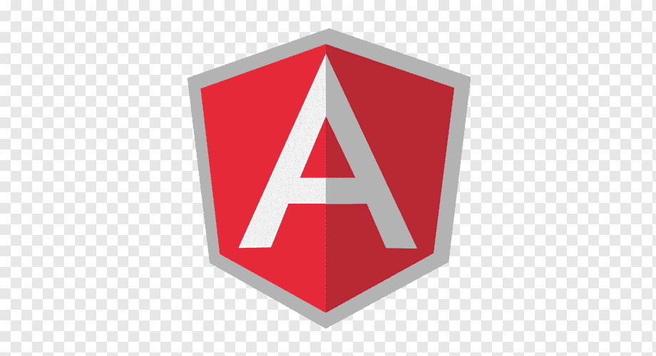

<nav class="sidemenu">
    <ul>
        <li routerLink="/home" >
            
            <span class="logo">Crud Matérias</span>
        </li>
        <li routerLink="/home"><mat-icon>home</mat-icon>Home</li>
        <li routerLink="/crud"><mat-icon>school</mat-icon>Cadastrar Matérias</li>
        <!-- <a href="" target="_blank"><li><mat-icon>local_fire_department</mat-icon>Firebase</li></a> -->
        <a href="https://angular.dev/" target="_blank"><li><mat-icon>description</mat-icon>Angular</li></a>
        <li routerLink="/login" class="logout"><mat-icon>logout</mat-icon>Sair</li>
    </ul>
</nav>